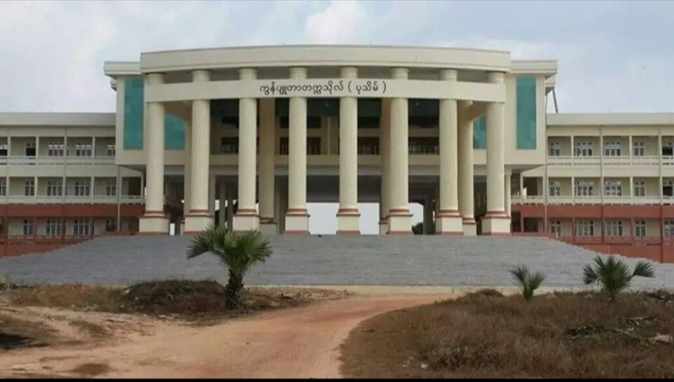
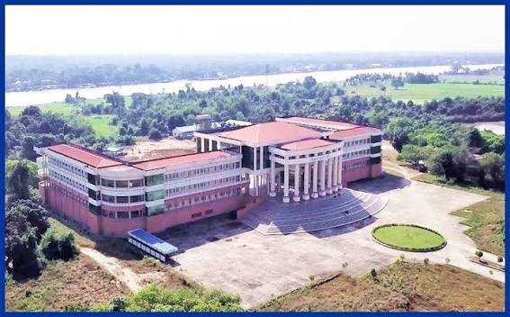
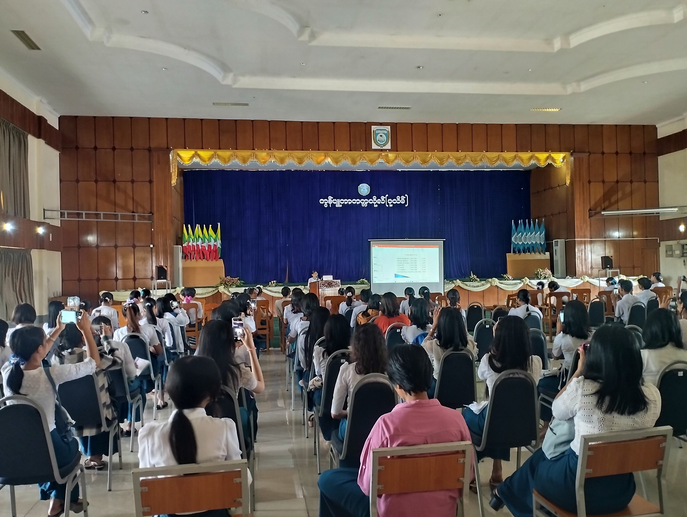

Excellence in Computer Science & Technology

The University of Computer Studies (Pathein) was originally founded as Government Computer College (GCC) on September 4, 2000, in Lwonkan Quarter. It was promoted to university status on January 20, 2007. The new university campus near Pathein Bridge, located at No. (9) Region, Htin Poneseik Quarter, Pathein Township, officially opened on April 22, 2010.
No. (9) Region, Htin Poneseik Quarter, Pathein Township, Ayeyarwady Region, Myanmar.
(Subject to Annual Qualification Criteria)


Pathein City, Ayeyarwady Region, Myanmar